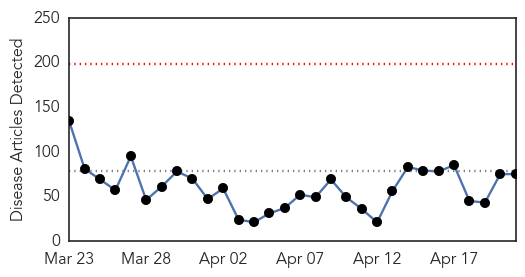
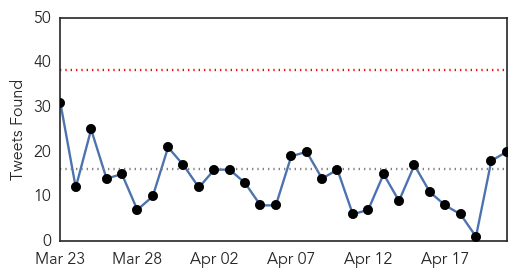
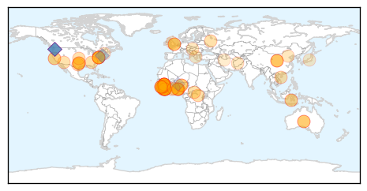
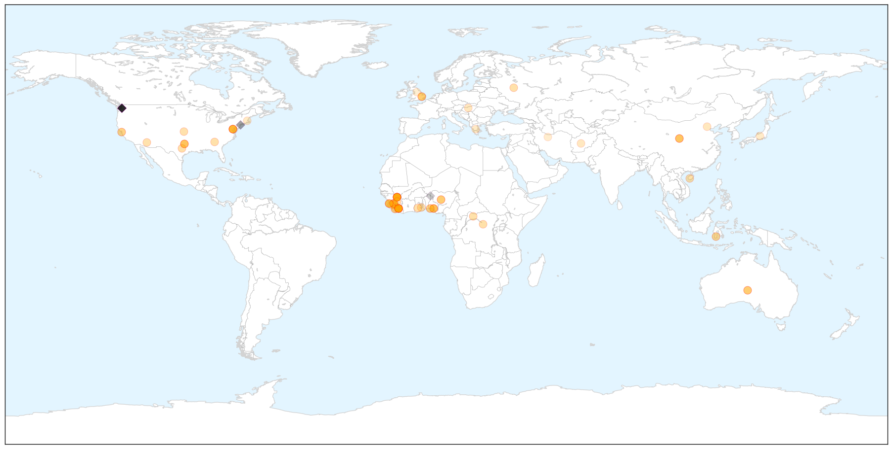
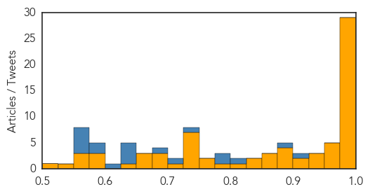

Ebola
30-Day Web Trend
0 alerts, 0 warnings

30-Day Twitter Trend
0 alerts, 0 warnings

Article Locations

X

Article Confidences
Top Articles:
- 1.000
- Ebola: A deadly killer lying in wait
- 1.000
- Obama: Ebola-fighting goal is to prevent new cases
- 1.000
- CDC's Disease Detective Conference
- 0.999
- WHO Warns Ebola Survivors on 'Safe Sex’
- 0.999
- Unknown Disease Spreads Ebola-like Panic Worldwide
- 0.999
- Almost 26,000 Infected With Ebola in West Africa – WHO
- 0.999
- Ebola survivors urged to abstain from sex indefinitely due to newfound risk
- 0.999
- Sierra Leone’s Struggle to Rid Itself of Ebola
- 0.999
- China’s medical workers commit to humanitarian role
- 0.998
- Health Officials Warn Ebola Survivors Against Having Sex After Virus Found in Fluid After 175 Days
- 0.998
- From Vaccinations to Vitamins: Ensuring West Africans Get Critical Care Amid Ebola Crisis
- 0.997
- Health Official Warn Ebola Survivors Against Having Sex
- 0.997
- U.S. media snob ‘Concerned Sierra Leoneans’ : No mention of demonstrations in reports or interviews with President Koroma
- 0.996
- Scientists to share real-time genetic data on deadly MERS, Ebola
- 0.995
- Scientists to Share Real-time Genetic Data on MERS, Ebola
- 0.994
- 10 Things You Should Know About Strange Disease In Ondo
- 0.994
- Australia Closes Lone Ebola Treatment Centre In Sierra Leone
- 0.993
- Ebola survivors urged to practice safe sex to prevent spread ff disease
- 0.992
- Controlling rural outbreaks critical to eliminating Ebola
- 0.991
- Ebola threat still real
- 0.990
- Sierra Leone's stray dog population doubles during Ebola crisis
- 0.988
- Rebuilding Liberia As Ebola Cases Decline - Liberia
- 0.984
- Chief Karwor warns against stigmatization
- 0.984
- Sierra Leonean President looking past Ebola to broad national recovery
- 0.982
- Guinea opposition march over the die down on anti-Ebola war
- 0.980
- Looking Into the Mirror of EBOLA: A Reminder of the Importance of Nutrition As We Age
- 0.979
- FG links Ondo mysterious deaths to contaminated ogogoro
- 0.978
- Disease Outbreak In Ondo State Is Punishment From The 'gods'
- 0.976
- EDITORIAL: Ben Solomon, ’10 awarded with Pulitzer Prize for Ebola coverage
- 0.974
- Australia must re-invest in Ebola-affected region
- 0.973
- Homeland Security News Wire
- 0.973
- Leaders of Ebola-Hit Nations: Trumpet Accountability – Aid Billions Will Flow
- 0.963
- Perfect Science
- 0.958
- UNMEER SRSG lauds school reopening in Sierra Leone, says country is set to defeat Ebola
- 0.946
- UT Austin researchers inform development of Ebola vaccine trials
- 0.935
- Lessons from the world's Ebola response: faster intervention, better communication needed
- 0.930
- Dallas nurse Amber Vinson's family says she's Ebola-free, but hospital, CDC haven't confirmed
- 0.908
- UN Strategizes to Curtail Future Catastrophes
- 0.906
- Update on days 4 & 5 of President’s Six-day visit to Washington DC
- 0.896
- IMANI: Ebola, health care investment and a plan for a West African Prosperity Network
- 0.892
- Afram Plains Health Directorate Working To Prevent Disease Outbreak
- 0.883
- Obama reassures U.S. help in West Africa’s Ebola recovery
- 0.881
- Pro democracy group demonstrates against President Koroma at IMF
- 0.871
- Minnesota Continues to Monitor Travelers for Ebola
- 0.871
- Ebola Survivors Urged To Practice Safe Sex
- 0.865
- Pesticide cause of mysterious deaths: WHO
- 0.828
- Judge halts worker's comp claim for Ebola nurse Nina Pham
- 0.826
- Sierra Leone's mining industry moving on from Ebola
- 0.820
- Judge halts worker's comp claim for Ebola nurse Nina Pham
- 0.790
- President Koroma Returns from USA and Leaves Again for Indonesia
Showing top 50 articles...
Top Tweets:
- 0.910
- RT: 37 Ebola cases just last week. Excited 2 join discussion at Ebola Innovation Summit. zerocases…
- 0.885
- We can survive Ebola. Everyone in this hangar can help patients survive Ebola and break the chain. Dr. Daniel Lucey Innovate4Ebola
- 0.824
- Ebola has a mind of its own Sierra Leone Dept. of Health Madina Rahman Innovate4Ebola
- 0.793
- Firestone Co. rapid effective interventions with lower rate of Ebola in Firestone district Liberia. CDCEIS15
- 0.782
- All of you innovate in any way you can. The Ebola outbreak needs it @davidnabarro Innovate4Ebola
- 0.746
- I am an Ebola nurse. I am also an Ebola survivor. This is my story. - International Federation of ... http://t.co/fmqbicSanw ebola EVD
- 0.719
- Judge halts worker's comp claim for Ebola nurse Nina Pham - Austin American-Statesman http://t.co/1jIx0DvUvR ebola EVD
- 0.685
- Road to Zero: Sierra Leone's Struggle to Rid Itself of Ebola - Gizmodo http://t.co/ku3E1kfDCq ebola EVD
- 0.647
- RT: Social Pathways for Ebola Virus Disease in Rural Sierra Leone and Some Implications for Containment | PLoS http://t.co/Q5d…
- 0.638
- Scientists to share real-time genetic data on deadly MERS Ebola - Reuters http://t.co/ctirLBmXCP ebola EVD
- 0.637
- Lessons from the world's Ebola response: faster intervention better ... - GeekWire http://t.co/T16jE1UCNV ebola EVD
- 0.637
- Guinean authorities have confirmed 9 new cases of Ebola near the Sierra Leone border: http://t.co/XdVZdUJf3V AfricaAgainstEbola
- 0.608
- Lara Logan talks about reporting on Ebola outbreak war - The News Journal http://t.co/hy5ninHs8m ebola EVD
- 0.595
- RT: Sierra Leone Health Minister is right - Ebola has a mind of its own. Proud to TackleEbola at Innovate4Ebola summiy today
- 0.582
- Survey of KAP re burial practices in Bo District Sierra Leone helped improve Ebola response. CDCEIS15
- 0.572
- Sierra Rutile's $77m investment aims to cast off Ebola's pall - Financial Times http://t.co/hcLVQDJAPG ebola EVD
- 0.572
- RT: 500 healthcare workers have died of ebola Such courage
- 0.567
- RT: The fight against Ebola is not over. Our latest story on the work of medical detectives in West Africa. outbreaks. http…
- 0.564
- WHO Promises Reform After Criticism Over Ebola Response - New York Times http://t.co/T7w6CyHzRC ebola EVD
- 0.554
- Disease detectives investigate how Ebola swept thru Sierra Leone village w/cases in 27/64 households. http://t.co/S7ZAuPH802 CDCEIS15
Mumps
30-Day Web Trend
3 alerts, 0 warnings

30-Day Twitter Trend
0 alerts, 0 warnings

Article Locations


Article Confidences

Top Articles:
-
No articles found for Apr 21, 2015
Top Tweets:
-
No tweets found for Apr 21, 2015